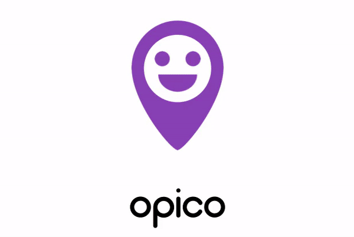
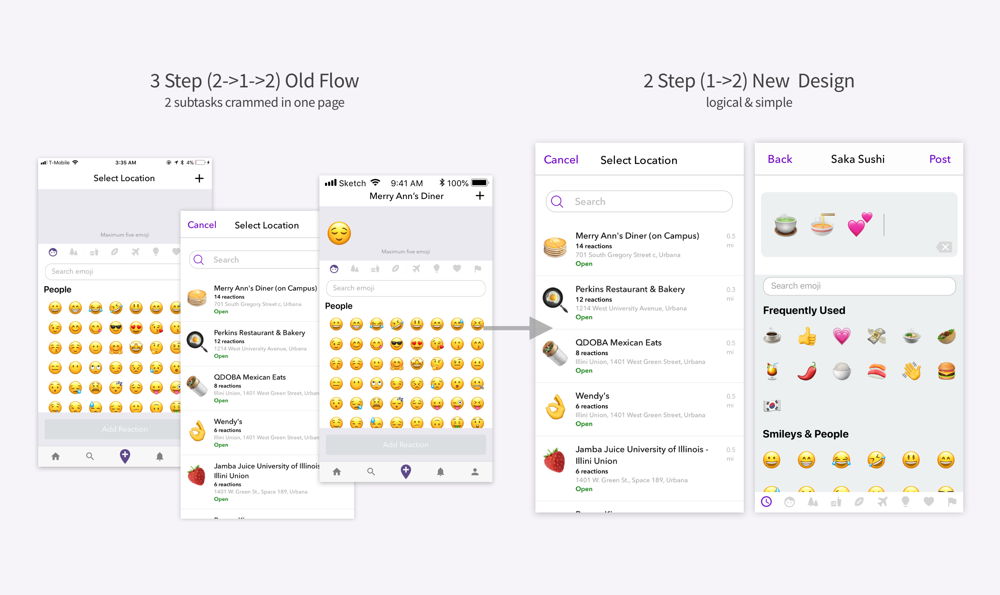

-
Share and Discover Places with Emojis
-
A buddy meter for your Spotify playlists, visualized with D3.js
-
Simplest way to save your delivery fee
-
Internships
-
Touch your wifi


Overview
OPICO is an abbreviation of "Opinionated Emojis." It is an app that allows the users to express their thoughts about and react to locations with emojis. It can be a social space where we simply share our reactions to places with maximum 5 emojis, or a review app to post and read compact emoji reviews of restaurants, shopping malls, etc.
My role: I led improve existing designs as well as designed new features and flows. Moreover, I participated in various user research and survey interviews and found out very interesting aspects of our users.. Below are some of the UX works I have accomplished or currently working on.
Posting Flow Renewal 🚧
Post Reaction task is the main feature of OPICO, as it allows the users to post their emoji reactions so that others' can see and like. The original design and flow of this task received some feedbacks that it did not reflect the user flow or logic very well.
 Post Reaction task is divided into 2 subtasks: Set Location and Add Reaction tasks, which should be completed in a sequential order. However, OPICO's original interface treated these subtasks as one single task, having them crammed in one interface, thus overwhelming the interface. Also, it doesn't suggest users to complete tasks step-by-step but instead allowed them to start reacting with emojis without setting their location first, which logically does not make sense.
In the above interface, if you want to add a location, you have to tap the "+" button to move to "Set Location" page, search for and select a location, and come back to the main page to add your reaction. This is so unnecessary!
I divided the two subtasks into separate pages so that when the users start Post Reaction task, they have to "Set a Location" first, before moving onto "Adding an Emoji" task.
This Emoji's on 🔥
While studying the user data, I realized that for a location, there is almost always several emojis that are most used by all of the users who posted a reaction to that location. For example, for one sushi restaurant in Champaign, IL, 10/12 reactions had a "Sushi" emoji. Also, most of the emoji keyboards including iOS keyboard has a category called "Frequently Used," which is a category of user's most-used/favorite emojis. Thus, in order to optimize the user experience and convenience, I decided to provide a category of the emojis that was used often in other users's reactions and the emojis that the user used most frequently.
When I first came up with the idea, other design team members were skeptical about the idea as showing trending emojis could hinder users' own decisions on which emojis to use. One of the suggestion was to only display the noun emojis such as "sushi" or "dumpling" instead of verb/adjective emojis such as "smiling face" or "thumbs up." By doing so, we can still give recommendations and convenience to the users by providing most-used object/noun emojis, while preventing them from making biased "reactions" with emotional/descriptive emojis. However, we decided to keep user's Frequently-Used emojis (including nouns, verbs, adjectives) as they are rather user's personal favorites rather than other's opinions.
Search Emoji 🔎 & Edit Reaction 📝
Editing emojis after initially typing them from the keyboard was not possible in the old interface. If I wanted to delete my third emoji after typing my fifth emoji, I had to delete my fifth and fourth in a row in order to get to my third emoji to finally delete it. As the concept Opico went for was to "Be Simple and Fun" than other social media or business reviewing apps, it was pretty ironic that we did not provide emoji editing feature.
I thought that this was a very important part of OPICO's UI to improve and fix, so I suggested several emoji editing features and methods to our team. With this thought in my mind, I researched several existing apps or softwares that provided editing features for texts or emojis as well as the motional methods to complete those actions including drag&drop or tap&wiggle.
After repeating the process of designing-demonstrating-discussing for several times and getting inspired by other products, I developed the design for new emoji editing features delivered by several user motions.
Emoji Search function is also very crucial as it helps the users find what they need out of 2,666 emojis. Especially for the users who are not comfortable with using emojis or have never used emojis, having a good search service and recommending them what emojis to use when they want to express their ideas is probably the most useful feature.
Get on board w/ the new onboarding flow 🚌
2018 CHI conference onboarding screen design
Search Marketing Group is a leader in creating unique Seo strategies that would help your website rank on page 1 of Google for your most competitive keywords in your niche. We pride ourself on creating custom solutions for businesses and making it work for them.
$PLIT is a delivery-fee-sharing app that allows the users to save their delivery fee by combining their orders based on locations. People that live in a community are less than likely to knock on their neighbors door and ask them to order food together. However, our application changes that social situation to make it more friendly. Through our platform, college students would be able to save their delivery fee without knowing anyone in the campus.
User Personas
• Unsatisfied freshmen: Students that live in dorms that are not satisfied with their meal plan that resort to delivering outside food
• Off-campus night-owls: Students that stay up late studying or partying that want a meal at an unusual time
• Broke New-Yorkers: People living a fast-paced lifestyle that don’t have time to drive into the city and don’t have money to spend on unnecessary fees
Search Marketing Group is a leader in creating unique Seo strategies that would help your website rank on page 1 of Google for your most competitive keywords in your niche. We pride ourself on creating custom solutions for businesses and making it work for them.